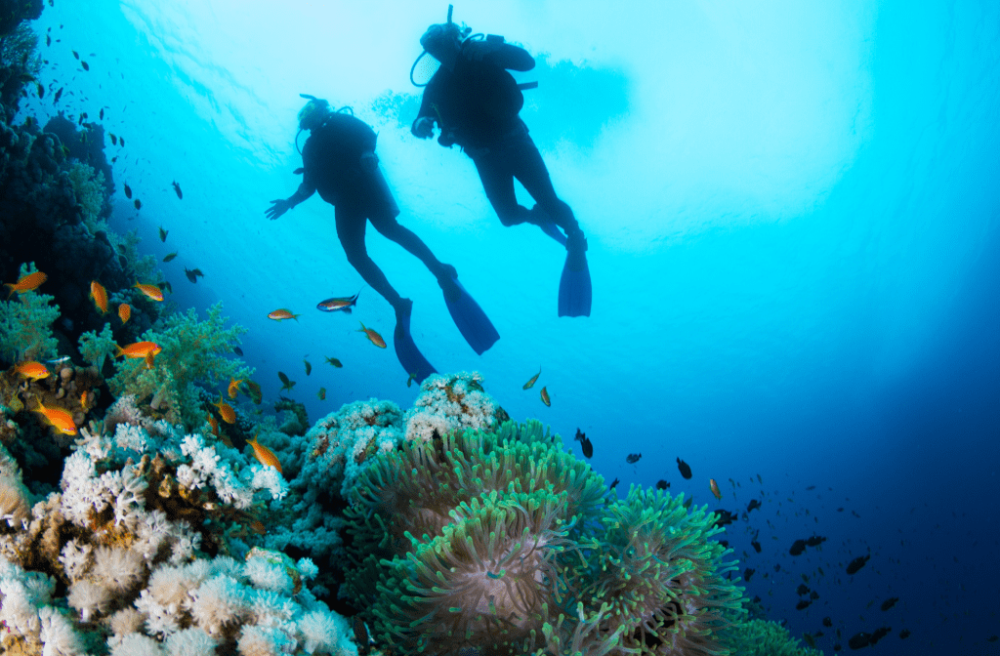
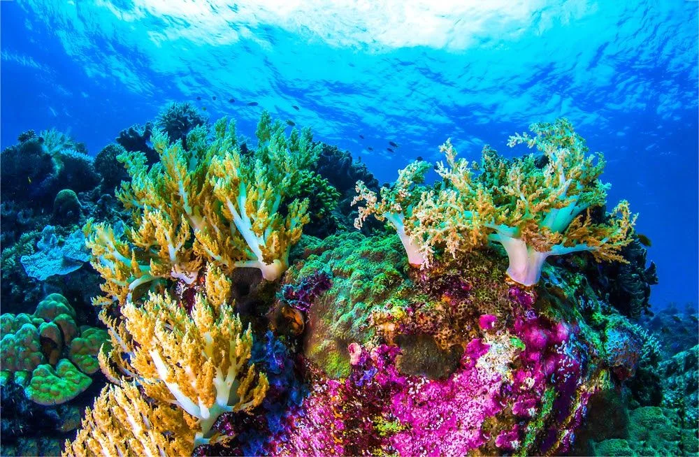
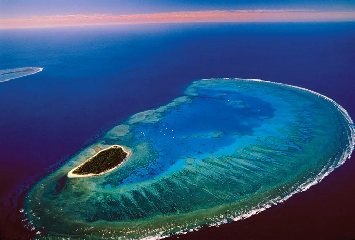

O Wave of Change é uma iniciativa da Iberostar que usa o turismo responsável para proteger os oceanos. As ações incluem: Fim dos plásticos descartáveis; Consumo sustentável de frutos-do-mar; Recuperação de ecossistemas costeiros, como recifes. O projeto busca restaurar a biodiversidade marinha e proteger as áreas onde seus hotéis estão localizados.
Os recifes de corais são formações marinhas compostas por corais, animais que vivem em colônias e produzem esqueletos de carbonato de cálcio. Esses recifes abrigam grande biodiversidade, são importantes para o equilíbrio ambiental, para a economia humana, especialmente na pesca e no turismo. Corais vivem em simbiose com algas microscópicas chamadas zooxantelas, que realizam fotossíntese e fornecem nutrientes aos corais, contribuindo também para suas cores vibrantes. Existem três tipos principais de recifes: recifes em franja, recifes de barreira e atóis. No entanto, esses ecossistemas estão sendo gravemente danificados por fatores como a poluição, o turismo descontrolado, a pesca predatória e, principalmente, o aquecimento global, que provoca o fenômeno conhecido como "branqueamento" dos corais, tornando-os mais vulneráveis e propensos à morte. A elevação da temperatura da água faz com que os corais expulsem suas zooxantelas, perdendo cor e vitalidade. Com o tempo, isso compromete toda a cadeia alimentar marinha associada aos recifes. O Brasil possui importantes recifes ao longo do litoral nordestino, com destaque para os de Abrolhos, na Bahia, que formam o maior banco de corais do Atlântico Sul. Já o maior recife de coral do mundo é a Grande Barreira de Corais, localizada na costa nordeste da Austrália.


Vinicius dos Santos
Maria Julia
Vinicius Romeo
Isadora Caldeira
Yara Rodrigues